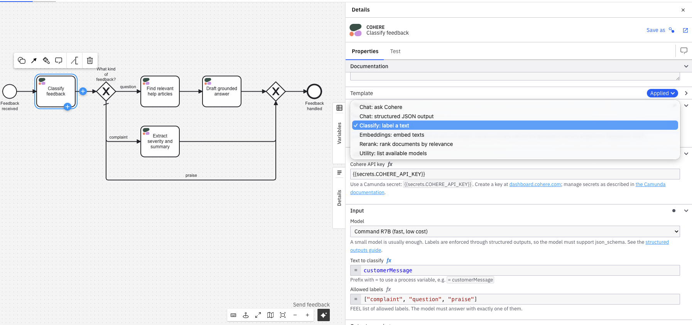

Chat, structured JSON output, classification, embeddings, and reranking inside BPMN processes, with zero custom runtime
The Cohere Connector brings Cohere's language models into Camunda 8 processes as a native element template. Process designers pick an operation from a dropdown, fill in a handful of friendly fields, and the built-in Camunda REST connector does the rest. There is no Java to build, no connector runtime to host, and no infrastructure beyond what a Camunda cluster already provides. The connector works on Camunda SaaS and Self-Managed from version 8.5, and every operation described in this paper was verified end to end against a live Camunda 8.9 SaaS cluster before release.
Beyond the expected chat operation, the connector focuses on the capabilities that matter most inside orchestrated processes: answers that are guaranteed to be valid JSON, classifications that are guaranteed to be one of your labels, and reranking, which reorders retrieved documents by true relevance before an AI agent or a human sees them.
Language models are probabilistic; business processes need to be deterministic about what happens next. The practical answer is to put the model inside an orchestration that constrains it: validate its output, route on its answers, escalate to humans when confidence is low, and audit every step. Camunda provides that discipline, and this connector provides the bridge.
Cohere is a strong fit for this pattern for three reasons:
The connector is an element template layered on Camunda's native REST connector (io.camunda:http-json:1). When a designer applies the template to a service task and picks an operation, the template writes the correct endpoint, authentication, request body, and result mapping into the model as plain input mappings and FEEL expressions. At runtime, the standard Camunda connector infrastructure executes the HTTP call.
| Property | Consequence |
|---|---|
| No custom code or runtime | Nothing to build, host, patch, or scale; works wherever the built-in connectors work |
| Runs on SaaS and Self-Managed 8.5+ | One artifact for every Camunda 8 deployment model |
| Everything is visible FEEL | The exact request body and result mapping are inspectable and editable in the properties panel; no black box |
| Secrets stay in the cluster | The API key is referenced as {{secrets.COHERE_API_KEY}} and never stored in the model or repository |
| Operation | Cohere endpoint | Result variables |
|---|---|---|
| Chat: ask Cohere | POST /v2/chat | cohereReply, cohereFinishReason, cohereUsage (billed tokens) |
| Chat: structured JSON output | POST /v2/chat with response_format | cohereJson (guaranteed valid JSON, schema-conformant if a schema is set), cohereUsage |
| Classify: label a text | POST /v2/chat, temperature 0, enum-constrained | cohereLabel (exactly one of the allowed labels) |
| Embeddings: embed texts | POST /v2/embed | cohereEmbeddings (one float vector per text), cohereEmbedBilledTokens |
| Rerank: rank documents by relevance | POST /v2/rerank | cohereRanked (list of position and score pairs, 1-based) |
| Utility: list available models | GET /v1/models | cohereModels (names with supported endpoints) |
Every operation carries a model dropdown with the current Cohere lineup (Command A+, Command A, Command A Reasoning, the Command R family, Aya, Embed v4, and the Rerank v3.5 and v4 families) plus a custom model field for fine-tuned or newly released models.
Three design decisions in this connector came directly from live testing, and they are worth understanding because they generalize to any LLM-in-a-process design.
Cohere retired its dedicated Classify endpoint in September 2025, so classification runs through chat. The first implementation used a strict instruction: respond with exactly one label and nothing else. In cluster testing, a question-shaped input defeated it; the model helpfully answered the customer's question instead of labeling it. The shipped implementation therefore does not ask the model to behave. It constrains the response with a structured-output enum built from the designer's label list, so the API cannot return anything outside that list. The label arrives ready for gateway conditions such as =cohereLabel = "approve".
In the Camunda REST connector, the error expression is evaluated after every invocation, including successful ones. An unconditional bpmnError(...) therefore fires on success too. The connector documents and defaults to the conditional form:
=if error != null and error.code = "429"
then bpmnError("COHERE_RATE_LIMIT", "Cohere rate limit hit") else null
Cohere returns 0-based document indices; FEEL lists are 1-based. The connector converts at the boundary, so the ranked positions index FEEL lists directly, and one output mapping rebuilds the ordered document list:
=for r in cohereRanked return rerankDocuments[r.position]
Classify with labels such as =["approve", "review", "reject"], then gate each path on cohereLabel. Because the label is enum-enforced at temperature 0, the gateway needs no fallback parsing.
Vector stores retrieve broadly; agents reason expensively. Put Rerank between them: pass the retrieved texts and the user's question, keep the top few, and let the generation step work from relevance-ordered context. In the sample process this pattern grounds a support answer in the two most relevant help articles.
Provide a JSON Schema and the structured output operation returns a string guaranteed to parse as JSON conforming to it, for example extracting a severity enum and a summary from a complaint. Parse it downstream in a job worker, script task, or AI agent step.
Chat operations map Cohere's billed token counts into cohereUsage on every instance, so cost can be aggregated in Camunda Optimize variable reports or inspected per instance in Operate.
The repository ships a ready-to-open sample, Customer Feedback Triage, with the template applied to every task: classify an incoming message, route on the label, answer questions with a rerank-grounded reply, and turn complaints into structured JSON for a human queue.

Both branches were verified on a live Camunda 8.9 SaaS cluster. One real complaint-path run, verbatim:
Input: "The export button has said 'loading' since Tuesday. My coffee has gone cold twice waiting for it, and cold coffee is a severity of its own."
Output: cohereLabel = "complaint", and complaintJson: severity "high", summary "The export button has been stuck on 'loading' for several days, causing significant delays and frustration, resulting in cold coffee twice."
{{secrets.COHERE_API_KEY}}; it never appears in models, repositories, or logs.src/cohere-connector.json from the repository and upload it to Web Modeler (or the Desktop Modeler element templates folder).COHERE_API_KEY.example folder.Zishan Ali Khan is a Solutions Engineer at Camunda. He built this connector following the community element template pattern, verified every operation against the live Cohere API and a Camunda 8.9 SaaS cluster, and maintains it at github.com/zishan-c8academy/camunda-connector-cohere. Improvements and issue reports are welcome there.